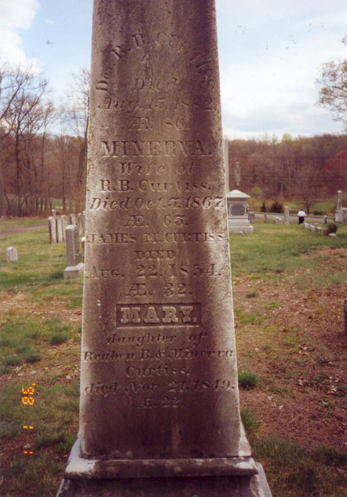
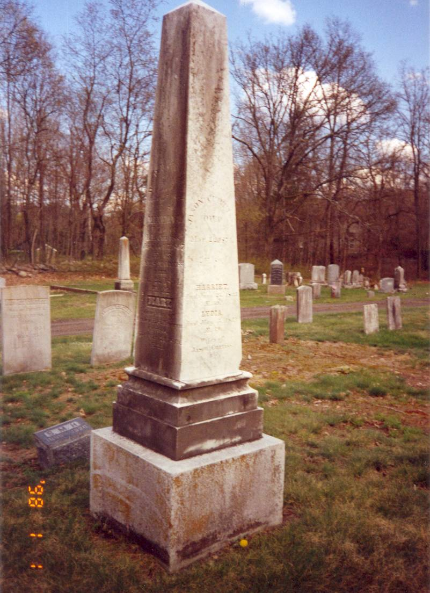

|
Click on small
photos below of the four sides of the stone shown above, and the three
stones laying on the ground beside it, to see a larger image.
|
Simeon, Mary,
Erastus, Mary & Emeline
|
Reuben, Minerva,
James & Mary
|
Simeon, Hannah
& Israel
|
Jason, Harriet
& Lydia
|
Israel Hannah
Simeon
(The names on these three stones are also on the monument.)
[see WPA list page 23 - 24]
|
April 2005
|